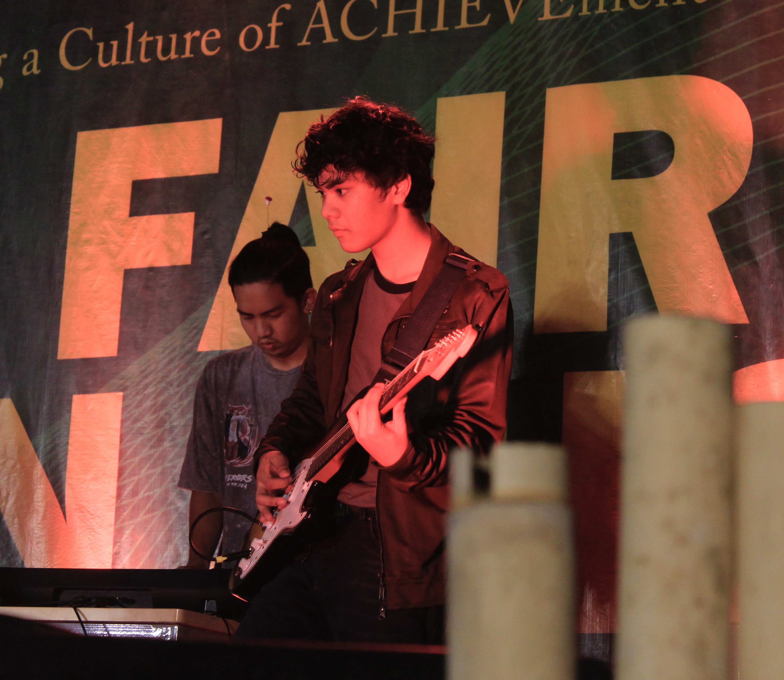

| Name: Kirsten Jacob R. Galam | Address: Brgy. 12, Sta. Filomena 2, Bacarra, Ilocos Norte |
| Date of Birth: August 11, 2004 | Contact: 09306728858 |
| Level | School |
|---|---|
| Grade 1 - Grade 5 | Santo Cristo Elementary School (2010-2015) |
| Grade 6 | Bacarra Central Elementary School (2016) |
| Grade 7 - Grade 10 | Bacarra National Comprehensive High School (2016-2020) |
| Grade 11 - Grade 12 | STI College of Laoag (2020-2022) ICT Strand |
| 1st Year College - 2nd Year College | Mariano Marcos State University (2022-Present) BSCS in Computer Science |